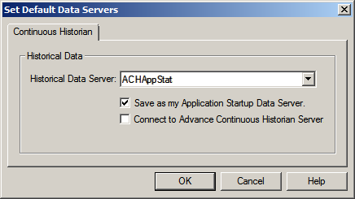
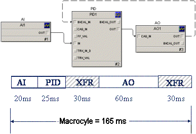
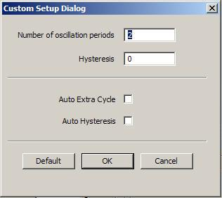
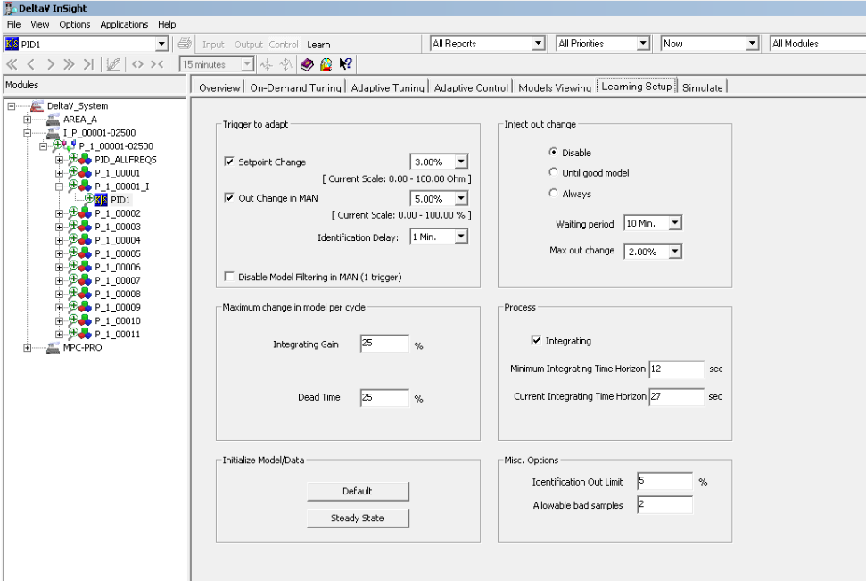
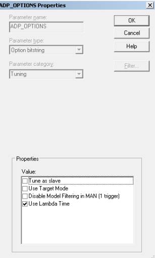
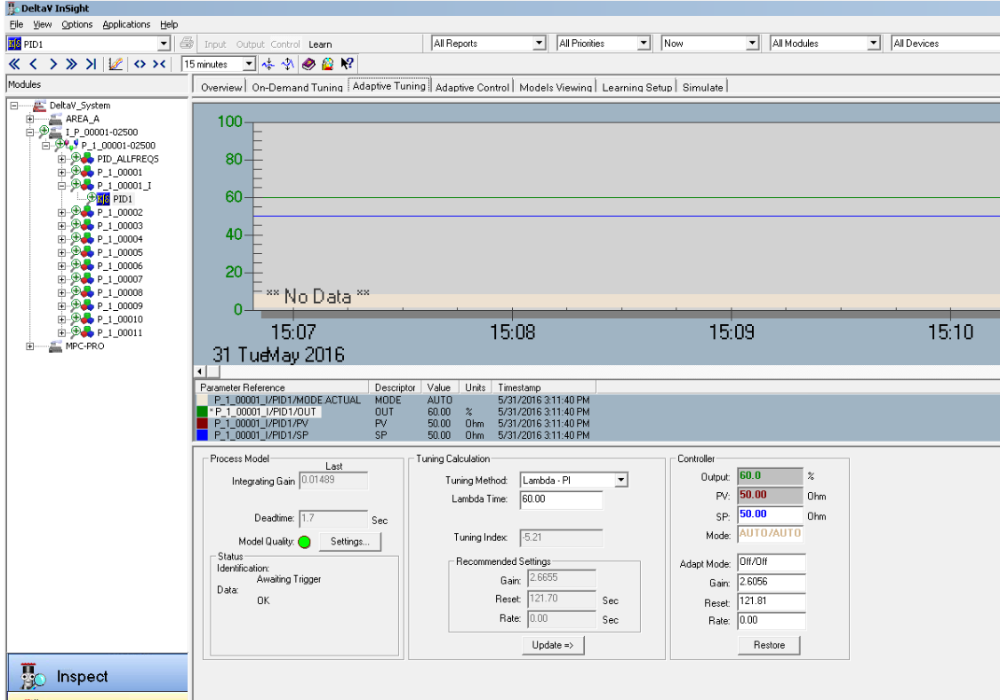

Using Tune with InSight
InSight tuning allows you to quickly tune a loop with minimal input. You can tune with InSight if you have Tuning and Control keys assigned to your user account. If this is your first time tuning with InSight, you might want to use simulator modules for PID and FLC blocks before tuning a live process.
Typically, tuning is started by selecting the item of interest in the hierarchy in the Inspect with InSight application and using the Inspect Overview and Summary pages to determine which loops require tuning. When you are ready to tune the loops, select the Tune navigation pane. The following image shows InSight opened to the Summary page. The cursor, in the lower-left corner in the image, is pointing to the Tune navigation pane.

There are two complementary ways to tune a loop: On-Demand and Adaptive Tuning.
About On-Demand Tuning
On-Demand Tuning applies to all PID and FLC blocks. If InSight is open, you can begin On-Demand Tuning by selecting the On-Demand Tuning tab. If InSight is not open, you can select the PID or FLC block to be tuned in Control Studio or DeltaV Explorer, right-click the block and then select Tune with InSight.
The typical On-Demand Tuning procedure involves:
- Identifying the process dynamics. This is done automatically by the test initiated at your request.
- Selecting the basis for tuning either by specifying the process type or the tuning rule to be used.
- Validating the tuning results using the Simulate selection.
- Updating the current controller tuning.
Before tuning a loop, the PV should be reasonably stable and near the SP. If the loop is not stable, the calculated control variables will be inconsistent and possibly inaccurate.
If the loop you are tuning has an extremely high noise level, the calculated tuning might be inconsistent. If the PV is stable but the controller output is constantly changing, your process loop might require noise protection.
If a loop's scan rate has been changed significantly several times after a loop has been tuned, it is recommended that you retune the loop for optimal performance. Retuning a loop is important when the loop scan rate has been increased, which can in extreme cases cause loop instability. If the process test is unacceptable when the scan rate has been increased, consider using the saved test results with the previous scan period at a slower desired response for tuning.
If the PV and the controller output are stable, you can start tuning the loop On-Demand.
About Adaptive Tuning and Adaptive Control
Adaptive Tuning
Adaptive Tuning is available if Process Learning has been enabled on a PID block. With Adaptive Tuning, process model development is triggered by changes in control parameters that occur in day-to-day operations such as a change to SP in AUTO or a change to OUT in MANUAL. When Process Learning is enabled, Adaptive Tuning automatically occurs in the DeltaV controller. Process Learning can be enabled from the DeltaV Explorer or from the InSight hierarchy.
Adaptive Tuning can be started from InSight by selecting the Adaptive Tuning page or by selecting a PID or FLC block with Process Learning enabled in DeltaV Explorer and selecting Tune with InSight from the context menu. Typically, Adaptive Tuning involves:
- Setting or validating the default settings on the Learning Setup page.
- Identifying the Adaptive Tuning process dynamics derived from the automatically generated process model. Models are generated when there is a change to SP in AUTO or a change to OUT in MANUAL.
- Specifying the tuning rule to be used with the model to determine the tuning values.
- Specifying the Adapt mode: Off, Partial, or Full.
- Validating the process model using the Models Viewing page.
- Validating the tuning results using the Simulate page.
- Updating the controller's tuning parameters.
Adaptive Control
Adaptive Control includes all of the Adaptive Tuning capabilities plus the ability to create models in up to five regions and to automatically change control loop tuning. An Adaptive Control license is required for full or partial Adaptive Control and to create models in regions. Process Learning must be enabled for Adaptive Control.
About Process Learning
When Process Learning is enabled, the DeltaV system automatically identifies process models and stores a recent history of the models. Models are not used for Adaptive Control until a license is assigned to the PID block. Licenses can be assigned to PID blocks running in the controller only. Process Learning can be enabled on PID blocks running in the controller, H1 card, and fieldbus devices. InSight can be used to view, analyze, and select the models that will be used to establish the recommended tuning. Process Learning can be enabled through the context menu at the following levels in the DeltaV Explorer:
Process Learning can also be enabled from the InSight hierarchy by selecting an item in the hierarchy, and then clicking Enable Learning from the context menu. The following image shows how to enable Process Learning from a PID block in the InSight hierarchy.
The next to an item in the hierarchy indicates that Process Learning has been enabled at that level. Process Learning can be enabled and disabled at any level in the InSight hierarchy. A red X on the Process Learning icon indicates that Process Learning was requested but not enabled due to systems problems such as low memory.
Opening InSight for Tuning
Tuning can be initiated from Control Studio, the DeltaV Explorer, the operator faceplate, or the Start menu.
To initiate tuning from Control Studio, select a PID or FLC block, and then click Tune with InSight from the context menu.
To initiate tuning from the DeltaV Explorer, select a module assigned to a controller or the specific block of a module, and then select Tune with InSight from the context menu. The following figure shows how to open InSight for tuning from a module assigned to a controller in DeltaV Explorer.
In DeltaV Operate, a button is provided to open InSight from the detail display for the PID and FLC block.
Alternatively, you can invoke InSight from the Start menu.
When InSight is first opened, the historical information plotted on the graph is collected from the PC from which the application was launched. If your historical information is assigned to another PC, click and use the Set Default Data Servers dialog to select the PC from which historical information is collected.

To improve performance when collecting historical data with the Advanced Continuous Historian or with a PI Server enterprise historian, enable the Connect to Advance Continuous Historian Server option of the Set Default Data Servers dialog.
After InSight is opened for tuning, the system creates models if Process Learning is enabled and uses the models in Adaptive Control if licenses are assigned to PID blocks running in the controller. The InSight user interface consists of the hierarchy in the left pane and seven pages: Overview, On-Demand Tuning, Adaptive Tuning, Adaptive Control, Models Viewing, Learning Setup, and Simulate. When Process Learning is enabled but no licenses are assigned, the Adaptive Control page is not active. When Process Learning is enabled and licenses are assigned, all pages are active. The following image shows InSight opened to the Overview page with a licensed block with Process Learning enabled selected in the hierarchy.
Before describing the various pages on the InSight interface, we will explain how to use InSight tuning with fieldbus devices. Go directly to the other topics in this document if you are not tuning PID blocks in fieldbus devices.
Using InSight Tuning with Fieldbus Devices
You can use On-Demand Tuning with PID blocks executing in fieldbus devices (FFPID blocks) and in the H1 card, FFPID_RMT blocks, and with PID and Fuzzy logic blocks assigned to execute in the controller.
You have several options on how to implement control options with fieldbus devices:
- You can assign all elements of the control loop to fieldbus devices.
- You can assign the PID loop to the transmitter or the valve.
- You can assign portions of the control loop, such as the PID block, to the DeltaV controller and assign the remaining blocks, such as AI and AO, to fieldbus devices.
- You can assign a subset of DeltaV function blocks to automatically run in the H1 card.
There are several things that affect control performance when using fieldbus devices:
- Function block execution, maximum response time for minimum schedule spacing between compel data messages, and slot time. These items depend on the device manufacturer's technology and design.
- Whether control is performed in the fieldbus device or control system.
- The scheduling of block execution and communications on the fieldbus segment.
Macrocycle is the time for scheduled and unscheduled communications. Scheduled communications includes function block execution time and transfer time (minimum schedule spacing). Unscheduled (asynchronous) communications are for Client-Server types (Function Block Views, SP changes, and Device Alarms for example). A minimum time for unscheduled communications is added to determine the macrocycle time. In the following image, the periods labeled XFR represent scheduled communications on the macrocycle.

If you split control between fieldbus devices and the DeltaV controller, the execution of the module in the controller is not synchronized with the function block execution in the fieldbus segments. This lack of synchronization introduces a variable delay in the control loop as great as the segment macrocycle. For example, a 1/2 second loop in which control is split can have as much as 1/2 second of additional variable delay. The added delay affects control loop tuning and can result in and increased variability in a fast control loop.
You will not see these types of delays if the Auto_assign function block to H1 card option is enabled for modules because block execution is synchronized with I/O blocks on the fieldbus segment.
InSight uses a hidden modifier to the PID block to capture process dynamics. In most manufacturer's fieldbus devices, this modifier is attached to a PID block in the controller that shadows the PID block in the device. You cannot see the PID block in the controller, or its hidden modifier.
All new Emerson fieldbus devices will include the hidden modifier in the PID block in the device. This eliminates errors introduced by communications delay or jitter and supports tuning of even the fastest loops. There are no changes to how the On-Demand Tuning interface looks and operates. The ability to tune loops running in fieldbus devices leads to reduced variability for fast process dynamics.
Using the Overview Page
Select an item in the hierarchy to see the percent of downloaded modules at that level that contain blocks with abnormal conditions. An area is selected in the hierarchy in the following image.
The Control Condition section graphically shows the percent of modules or blocks at the selected level in the hierarchy that have abnormal conditions. The actual number of modules or blocks that have abnormal conditions is shown on the graph. The Control Utilization value indicates proximity to ideal control and whether control blocks were used as designed.
Using the On-Demand Tuning Page
After you select a block for tuning, InSight must identify the process dynamics associated with the control loop. Look at the Test Process panel on the left side of the On-Demand Tuning page.
Process dynamics are determined automatically by InSight. If the controlled parameter (PV) reflects an accumulation or imbalance between inlet and outlet flow, select the Integrating process. The percent change in the PID block output from its initial value is determined by the selected step size. A default step size of 3 percent is sufficient for most situations. For most processes, start tuning with a step size of 3 percent. If the gain of the loop is high or the process is integrating (not self-regulating), use 3 percent initially. Use a step size of 5 or 10 percent if tuning does not develop oscillations with a 3 percent step size. The tuning might not develop oscillations if the gain of the loop is extremely low or the loop has too much noise. However, a 10 percent step size is not recommended for integrated processes.
In some cases, process measurement is noisy or characterized by significant load disturbances. If such conditions exist, expert users can achieve better results by customizing the setup to use relay hysteresis or extend the length of testing. To customize the setup, enable the expert options by selecting , and then click the Custom button on the On-Demand Tuning page to open the Custom Setup dialog.

- Number of oscillation periods - enter a value between 1 and 5.
- Hysteresis - enter a value for PV hysteresis during the process test.
- Auto-Extra Cycle - adds an additional oscillation period with increased process deadtime for better process model identification.
- Auto-Hysteresis - automatically defines PV hysteresis during the process test based on the process noise
If the process characteristics such as gain, time constants, noise, scaling, and so on seem out of the normal range, click the Default Process button to modify the tuner settings to better fit the process characteristics. Note that the Expected Process Response option is not supported for PID blocks running in fieldbus devices.
After checking these entries and making the appropriate changes, click Test to initiate testing of the process and identify process dynamics.
Caution Before starting the tuning process, make sure that the loop is reasonably stabilized at the SP. If the PV is not close to the SP, begin tuning the loop from Manual mode.
After selecting Test, the PID block output adjusts from its initial value by the step size. You can stop testing at any time by clicking the Abort button. When testing is not active, you can change the target mode and the SP of the block from the Controller panel. You can change output when mode is in Manual.
Typical changes made during testing in the PID block output (Output), input (PV), and actual mode are shown in the following example.
When tuning a loop, the SP and output should not be at either end of their respective ranges. The output must be no lower than 10 percent of the range and no higher than 90 percent of the range or the oscillations will be affected.
The PV of a loop should be close to the SP when you begin tuning. InSight checks the values for the SP and the PV before tuning the loop. If the deviation is too large, this indicates that the loop is not stable enough to begin the tuning process. The tuner waits until the SP-PV value is within the required limit.
If, under normal operations, either the SP is not close to the PV, the loop is influenced by disturbances, or a loop is in a transient condition, the tuning results will not be as accurate and consistent as those from properly stabilized loops.
If tuning proceeds properly, the state changes to an active state, and the control block actual mode changes to Local Override (LO). The time between each change in the block output depends on the process response time. For example, a change in the process input (block output) might not be immediately reflected because of process delay in the controlled parameter (block PV). Watch the trend display area during the tuning process. If loop trend traces are not typical or tuning does not start, restore the initial loop conditions by clicking the Abort button. On rare occasions, InSight may not detect a response and the test becomes stuck in LO mode with no PV movement. Again watch the trend display area during the test and if you notice that the test keeps the mode in LO for a long period of time with no PV movement, click the Abort button to return the mode to its original state.
While testing is active, status is shown as Testing process in the Test Process panel. The progression of the testing is indicated by a bar graph showing percent completion, as shown in the following figure.
A yellow circle icon appears next to the control block in the hierarchy to indicate that testing is active. The yellow circle icon overwrites the icon if Process Learning is enabled for the block. The following figure shows how these icons appear in the hierarchy.
The Testing is Active icon remains next to the control block until the test completes and the block is selected to view the test results. Only five tests can be run at one time.
When the status of a parameter changes, the color of the trend on the graph changes. For good data values, trends appear in the colors indicated in the Parameter Reference area. The trend color goes to yellow for parameter values that change from Good to Uncertain or Limited and to red for values that change from Good to Bad.
Once testing is successfully completed, the loop returns to the original mode and original output. The process dynamics that were identified are shown in process results for a self-regulating process, as shown in the following figure.
When Integrating process is selected, the process dynamics for an integrating process are displayed, as shown in the following figure.
The dynamic values displayed vary with the process controlled by this block. You can repeat the tuning procedure for the same loop by selecting Test again.
If abnormal conditions are detected during testing that might impact the accuracy with which the process dynamics can be identified, a warning or an error message is issued. When the detected condition prevents testing to be completed successfully, an error message is generated and tuning is stopped.
Once testing is successfully completed, proceed to the central area of the Tuning Calculation panel. Here, you can supervise tuning calculations based on the identified process dynamics. If testing did not complete successfully, an appropriate warning message is issued.
Establishing Loop Tuning
In the loop tuning phase for a PID block using the Normal selection, the following Tuning Calculation panel appears:
The Desired Response options are Normal, Slow, and Fast.
If an FLC block is being tuned, the Tuning Calculation panel displays the recommended scaling factors for the FLC block, as shown below:
The recommended block tuning settings are provided automatically, based on the identified process dynamics, the process type, and the loop response selected in this panel. When using the Normal setting, tuning calculations are performed by non-linear estimators. Non-linear estimators correct major deficiencies of Ziegler-Nichols tuning:
- too short controller integral time for processes with small deadtime to time constant ratios
- excessive controller integral time for processes with a significant deadtime
- excessive controller gain for processes with small deadtimes
You can modify the recommended tuning values by entering the values you want into the fields provided. To transfer these settings from the workstation to the PID or FLC block, select Update=> in the bottom of the panel. After selecting Update=>, the recommended settings are transferred to the block, and the new tuning values are displayed as the current settings. To restore the original settings, select Restore in the Controller panel.
The default process type for a PID block using the Normal selection is Typical - PI. This default is used for the initial tuning recommendation unless you change the process type. However, if this selection does not match the process, you must change the process type to one of the following selections:
After you change the selection, the recommended tuning is updated.
If the process is identified without messages, the results are displayed in the Process test results area. If the identified process deadtime is greater than a quarter of the time constant, you can improve loop performance by clicking .
If the identified process deadtime is greater than the time constant, select Deadtime dominant. If you have applied the Smith predictor in your control module, click , and then select Lambda Smith Predictor in the Tuning Calculation panel.
The following information applies to PID function block tuning:
- The loop response specifies the speed at which a control loop responds to process upsets and SP changes. The recommended proportional gain for a particular process changes depending on the loop response. The default setting of Normal gives moderate response. By selecting Fast, the controller output change is greater and loop's response faster. Selecting Slow has the opposite effect.
- If, after determining the process characteristics, the process gain is less than .6 or greater than 2.5, model-based tuning is not recommended.
- If the Expert option is not selected, you are then using the modified Ziegler-Nichols tuning rules. This is the default selection and should be used as a first choice. However, if you find that the tuning results are not satisfactory, you can then click .
- If you select Use model-based tuning, you are then using one of the following: the Lambda PI tuning rules with a Lambda factor of 1.5 for Normal Selection, 2.0 for Slow Selection, and 1.25 for Fast Selectionor the IMC PID tuning rules with a filter factor of 1.5 for Normal Selection, 2.0 for Slow Selection, and 1.25 for Fast Selection.
- If you want to change some of the tuning factors, click , and then change the desired factors.
- PI tuning is not valid for PID blocks with the STRUCTURE parameter set to PD action on error. Rate will be calculated.
Once tuning is complete, you can change the setup and calculate new values, try tuning the loop again, or modify the calculated values. You can use the Trend display area to monitor the loop response with the new tuning.
Manually Entering Model Parameters
If for some reason the process cannot be tested or the process test results do not satisfy your expectations, expert users can enter or correct the Tune process model manually for both PID loops and FLC loops.
For PID loops, click any process model parameter in the Test Process section to open the Process Model Parameters dialog.
Parameters marked by an asterisk (*) must be non-zero for the selected process type of tuning method. The dialog displays five parameters for non-integrating processes and four parameters for integrating processes. Two or three parameters are marked for particular selections. After clicking the OK button, the entered process model is used for the PID parameter calculations.
The procedure for manually entering model parameters for FLC loops is identical to PID loops. Be aware that you may not get the expected FLC superior performance if the process dead time to time constant ratio exceeds 0.25. In this case, DeltaV Predict is likely to provide better results.
Using Other Features
InSight tuning can be used on various processes that operate over a wide dynamic range. This section describes how the default settings associated with trend scaling, testing amplitude, and duration can be changed to compensate for the process range or operating conditions. Following the information in this section ensures that the best possible tuning is achieved for all operating conditions. The Expert selections available in tuning and the options available for saving or printing block tuning are discussed as well. Also included is detailed information about the offline simulation capability that is provided with this product to support training on InSight.
Modifying the Trend Display Area
In the top of the InSight window, a trend of the block PV, output, SP, and actual mode is shown. You can adjust the time frame displayed for the parameters shown in the Trend display area using the following selections shown in the toolbar:
The span of the PV, SP, and Output are initially displayed in full range. You can modify the trend range to show values over a smaller or larger range than the default value. In the Controller panel, right-click the box associated with the parameter (SP, OUT, or PV) whose trend range is to be modified, and then select Properties.
Then, click Set Y Scale, and then select either Manual or Auto Scale.
Select either the Compress range or Expand range button provided in the toolbar:
Using the Expert Feature
The Expert feature allows you to retain all Normal selections and select your specific tuning rule to use with the loop response in calculating the best tuning of a PID block. When you click , the available tuning methods for the PID are displayed in the Control Panel area, as shown in the following figures. The figure on the left shows the tuning method selections for non-integrating process and the figure on the right shows the selections for integrating processes. Enable this option by selecting the Integrating process check box in the Test Process area.


Some of the tuning rules provided in advanced tuning are very specialized. For PID and PI loops, use Lambda or IMC tuning rules first. These settings should be satisfactory in most cases. If you have a thorough understanding of loop tuning, you can use some of the alternate tuning rules. If the tuning results are not satisfactory, you can change the rule selection.
For non-integrating processes, the Expert selection provides the following tuning rules:
- Ziegler-Nichols - PI - This tuning rule provides the basic rules for calculating controller settings from ultimate gain and ultimate period.
- Lambda - PI - This tuning rule allows the desired ratio of closed loop time constant to open loop time constant to be specified through the Lambda factor.
- Lambda - Smith predictor - This tuning rule should be used with the PID_DEADTIME Module Template.
- Internal Model Control - PID - This tuning rule provides proportional, integral, and derivative control and assumes a first order process with a time delay. During tuning, the model is identified and the tuning values are calculated. The procedure for identifying the model is a patented Fisher-Rosemount Systems technique.
For integrating processes, the Expert selection provides:
- Lambda - Averaging Level - PI - This tuning rule is similar to the Lambda tuning rule, but it works for integrating level loops.
The IMC tuning rule is especially useful when a process deadtime is longer than half of the process time constant. The process deadtime and the process time constant are shown in the Process Test panel.
The Tuning Method options in the Expert Feature include the alternate tuning rules, Typical - PI and Typical - PID, which are also available when using the Normal selection.
When a process deadtime is equal to or greater than the process time constant, it is beneficial to apply Smith Predictor.
To change the Expert setting, you do not have to retune the loop. Once InSight has obtained the process dynamics for a loop, it can calculate new controller settings for different Expert selections.
Specifying the Number of Decimal Places
You can specify the number of decimal places that will be used throughout the application when you modify parameter values. Click to open the Number of Decimal Places Setting dialog.
Saving and Printing Block Tuning
When tuning a block, you can save the current test data to a file by clicking . The parameter values used in the tuning process are saved in the DVData\InSight folder. By clicking , you can specify the folder. When you have finished tuning and are closing InSight, you are also given an opportunity to save. When initiating tuning with InSight, it is possible to start the tuning process using previously saved values.
After tuning a block, you can obtain a hard copy of the tuning parameters and selections made in InSight. You can initiate this request either by selecting the Print option under File or selecting the Print icon in the toolbar. In response, a single-page summary of the parameters used in tuning is printed on the user-specified printer.
Using the Adaptive Tuning Page
If Process Learning has been enabled on a PID block, when you select the PID block in InSight, the Adaptive Tuning page is available as shown in the following image.
The Process Model panel shows the values for Process Gain, Time Constant, and Deadtime from the last good model.
The Model Quality indicator (green or red) shows if the model is good relative to a minimum value (approximately 50% in a 0-100% scale) that defines a good model. Model quality is based on an adaptation history of the models for each region as well as consistency and model deviation over time.
The Settings button opens the Region Settings dialog.
In Adaptive Control, regions are used to divide the range of a non-linear state parameter into piecewise linear segments. As a simple example, process gain can change as a function of a valve stem position if the final control element has non-linear installed characteristics. The valve's output signal can be configured as the state parameter and the state parameter can be split into as many as five (5) regions. The regions can be aligned for linearity such that each region in a non-linear range is made linear. In full Adapt mode, InSight automatically updates the models in each region. When the state parameter changes from one region to another, the model values and tuning change to the last good model and tuning created for that region.
From the Adaptive Tuning page the Region Settings dialog can be used to set region boundaries, view the values of the last and approved model in that region, view the quality of the last model, and center the limits.
The Status area indicates if a model has been triggered and the current status of model creation. Model triggering criteria (Setpoint and/or Out change in MAN) is specified on the Learning Setup page. Possible values for Identification are: Awaiting Trigger, Triggered, Results Pending, Disabled, Waiting for Valid Data, Model Near Limits (5% of the parameter range). Possible values for Data are: Initializing, OK, Bad, Disabled.
Once a model is successfully identified, it is a good idea to examine the previous model and compare it to the current model using the Models Viewing page. When you are confident that the current model is consistent with previous models and that the model values are not limited, use the Tuning Calculation panel to select the tuning rule and desired response time and to manipulate the tuning calculations based on the identified process model. The tuning rules are for model-based tuning only. The Tuning Index indicates the potential for improving control performance by updating controller tuning according to the current identified model and the selected tuning rule.
You can change the Adapt target mode by clicking the Adapt mode field. The Adapt mode options are:
- Off - The controller calculates new models and tuning for each region but does not adjust the closed-loop tuning parameters. The control loop uses the default tuning parameters.
- Partial Adapt - the controller calculates new models and tuning for each region and adjusts closed-loop tuning based on the approved models for each region. The controller adjustments are made only for models the user has reviewed and approved.
- Full Adapt - the controller calculates new models and tuning for each region and automatically adjusts closed-loop tuning based on the last model calculated for each region. No user review or approval is required.
When you are satisfied with the tuning values presented in the Recommended Settings area, click the Update=> button to send these values to the controller.
Using the Adaptive Control Page
The Adaptive Control page is available when a license has been assigned to a PID block. This page is used to view and modify the adapted model parameters in the controller and to see detailed information for each region.
Expert users can use this page to:
- Change the tuning method and Lambda factor
- View the values for Closed Loop Time Constant and Tuning Index
- Modify controller values
- Change controller and Adapt modes.
Non-expert users can use this page to:
- Change the process type and desired response time
- Modify controller values
- Change controller and Adapt modes
Both expert and non-expert users can view the values for:
- GAIN_WRK - In full Adapt mode, the working gain is the block's current Gain that is calculated based on the last model calculated for the current active region. In partial Adapt mode, this value corresponds to the current Gain that is calculated based on the approved model for the current active region.
- RESET_WRK - In full Adapt mode, the working reset is the block's current Reset value that is calculated based on the last model calculated for the active region. In partial Adapt mode, this value corresponds to the current Reset value calculated based on the approved model for the current region.
- RATE_WRK - In full Adapt mode, the working rate is the block's current Rate value that is calculated based on the last model calculated for the active region. In partial Adapt mode, this value corresponds to the current Rate value that is calculated based on the approved model for the current region.
The chart in the lower left hand corner shows information on the models created in each region configured for the block. Model quality is indicated by color: red means that the quality of the last model in the region is bad and green means that the quality of the last model in the region is good. The dark gray area shows the model values in the current region. The Region Settings dialog can be opened from the chart. Click the chart, and then select Settings from the context menu.
Using the Models Viewing Page
Use the Models Viewing page to analyze and compare models that have been previously identified. From this page you can:
- Select a previous model or an average of selected models to replace the current model
- Plot models in a variety of ways to review past models.
- Change the number of regions and region boundaries
- Select the state parameter and Adapt mode
- Copy models to the clipboard and copy models and model limits from one region to another
- Save a model to the model database
Whenever a loop is selected, the application automatically loads up to 200 models that have been identified and stored in the model database for the loop. If the number of models exceeds 200, models are automatically removed from the database. Lower quality and older models are removed first. Information about the models such as timestamp, quality and process information are shown in the top portion of the page. Model quality is based on an adaptation history of the models for each region as well as consistency and model deviation over time. Sort the models by clicking a column heading.
Delete a model from this page by selecting the model, and then clicking Delete Model from the context menu. Use the SHIFT and CTRL keys to select multiple models to delete.
Models can be plotted against Time, Quality, and process variable information such as PV, OUT, working SP and Other. Select a model or multiple models, and then click Plot Selected from the context menu, or use the boxes that appear next to the model to select the models to plot. The legend, on top of the graph, explains what is being trended on the graph. To remove a plotted model from the graph, select the model in the Model list, and then click Remove Selected from the context menu.
Use the State parameter drop-down list to select a state parameter to explore process non-linearity relative to the selected state. A non-linear state parameter can be split into as many as five (5) regions. Use the Number of regions drop-down list to specify the number of regions. Possible state parameter values are:
- OUT - the controller output/process model input
- PV - the Process Variable/process model output
- SP_WRK - the PV working setpoint
- Aux - a user-defined value. It can be calculated from several process parameters
Click the Settings button to open the Region Settings dialog.
Use this dialog to view and use the average and last model parameter values for the selected models per region. To use the last or average values, click the >> and << buttons to approve the values. You can edit the approved values and the high and low limits for model parameters and re-center the high and low limits from this dialog. You can also modify the region description. This dialog can also be accessed through the context menu from the Model list and the chart.
Using the Learning Setup Page
The Learning Setup page contains six areas: Trigger to adapt, Maximum change in model per cycle, Initialize Model/Data, Inject out change, Process, and Misc. Options.
Trigger to Adapt - Allows you to select whether changes in setpoint in Automatic mode or changes in output in Manual mode trigger adaptation of the model. Use the Identification Delay option to select a time period after model identification completes when the defined triggers will not trigger adaptation. Use the Setpoint Change drop-down list to select the percentage of setpoint change that triggers adaptation. Use the Out Change scale drop-down list to select the percent of out change in manual that triggers adaptation.
Maximum Change in Model per cycle - Allows you to configure the maximum change that a new identification can deviate from the last good model. The maximum change selections are in terms of percent of the span for the current range high limit. These limits do not take effect until the module is downloaded and five (5) models have been identified after the download.
Inject Out Change - Allows you to enable automatic injection of a disturbance in the controller output when the setpoint or control output does not change enough to trigger adaptation of the feedback model under normal operating conditions. The magnitude of the injected change is specified in terms of the percent of output span. The When not adapted option enables automatic injection of a disturbance in the controller output only when no adaptation is triggered by the setpoint or control output or if the triggered adaptation does not provide a good quality model. Also, you can define the time that must pass (in seconds) from the last identification before a change is injected in the control output. Normally, out change should be higher than OUT change in MAN, especially for noisy loops.
Process - Allows you to modify the default selection associated with the process response to correctly reflect the equipment that is being controlled. If the process exhibits an integrating response to a change in its input, for example tank level, Integrating should be selected. When Integrating is selected, the process model automatically reflects the two parameters that describe integrating processes: Integrating Process Gain and Deadtime. The Process section also includes the estimated current and minimum time to steady state used to determine the amount of information that must be collected for identification. By default, the values for time to steady state are automatically based on the tuning or the time to steady state values you enter before the module is first downloaded. The minimum time to steady state value is used to initialize the current time to steady state. You can modify the minimum time to steady state based on your knowledge of the process to make the initial identification faster and also to ensure that under all conditions a minimum set of data is collected. The current time to steady state value is updated based on the last model.
Integrating process loops, as shown in the example below, must use Lambda time instead of Lambda factor.

Specify that InSight use Lambda time instead of Lambda factor in the Properties of the ADP_OPTIONS parameter in Control Studio as shown below:

The InSight application should then appear similar to the following example:

Initialize Model/Data - Allows you to choose how the data is initialized. Select the Default button to initialize the actual process model parameters (Gain, Time Constant, and Deadtime) from the current PID controller tuning parameters (Gain, Reset, Rate). Select the Steady State button to initialize the data in the buffer by assigning the current values for PV and OUT to all PV and OUT parameters.
Misc. Options - The Identification Out Limit (0.0-50.0) option allows you to define a region, above 0% and below 100% of the controller's OUT value, in which identification is prohibited. Whenever the controller's OUT value falls into the defined region, identification is aborted or the identification buffers are invalidated. The Allowable bad samples (0-5) option is used to specify the number of consecutive Bad (Bad, Uncertain, Limited) PV samples that are allowed for identification. This option allows you to filter noise that would otherwise invalidate identification.
Using the Simulate Page
Use the Simulate page to see simulated loop responses for FLC and PID control blocks and robustness plotting and tuning for the PID control block based on the block's On-Demand Tuning or the approved model's Adaptive Tuning. Use the On-Demand Tuning or Adaptive Tuning buttons to select the simulation criteria. Simulated responses use the identified process parameters.
- If the control block is an FLC, the Simulated Response and Robustness window will open with a simulated setpoint response.
- If the control block is a PID, the recommended tuning parameters will be checked for stability and the PID structure checked for validity and normalcy.
- If you select the Integrating Process check box and the PID structure is one of the I+D structures, then a message will be displayed indicating an invalid configuration. You will not be able to proceed to the Simulated Response and Robustness window.
- If the robustness calculations determine that the recommended tuning parameters yield an unstable result, a message will be displayed indicating unstable tuning. You can proceed to the Simulated Response and Robustness window by clicking OK in the message box.
- If you do not select the Integrating Process check box and the structure is a P+D, then a message will be displayed indicating that this is an unusual configuration. You may proceed to the Simulated Response and Robustness window by clicking OK in the message box.
- If there are no unusual or invalid conditions, then the Simulated Response and Robustness window will be opened without any warning messages.
Simulated Response and Robustness Layout
In the top half of the window is a simulated response trend plot with performance variables and simulation selection buttons on the right. In the lower-right section of the window, are the recommended and current tuning parameter display boxes with an Update button immediately below them. If the control block is a PID, DT Margin and (if you selected the Integrating Process check box) % Surge are displayed. If the control block is an FLC, DT Margin and % Surge are not displayed.
Simulated Response
You activate the first simulated response when you open the Simulate page. Any new tuning parameter entries (or for the PID any new robustness map tuning selection) will cause a new simulated response to appear immediately. You may select whether you want a setpoint or disturbance step response simulated for the entry and/or current controller tuning parameters. Make your selections as follows:
- To select setpoint (SP) or disturbance simulated response, click either the SP or Disturbance button.
- To cause the current controller tuning parameter responses for PV and OUT to be presented with the entry tuning parameter response, select the Controller check box.
- Any change in your selections will cause the simulated response plot to be updated.
- There are three (3) performance variables that are updated after every new simulated response.
- Overshoot - Presented as percent of step change by which the process variable overshoots the new setpoint.
- IAE - Integrated Absolute Error is presented for all SP responses. IAE will also be displayed for disturbance responses if you did not select the Integrating Process check box before you clicked the SIMULATE button.
- Arrest - Arrest is displayed for disturbance responses if you selected the Integrating Process check box. Arrest is the time it takes for the control to stop the process variable movement away from setpoint. It is also the time at which the maximum error during the response time occurs.
Entry and Recommended Tuning Parameters
You may enter the entry tuning parameters in either of the following ways:
- Directly by clicking one of the parameter display boxes and entering new value(s)
- By clicking within the robustness plot
You may update the recommended tuning parameters with the entry tuning parameters by pushing the Update=> button. The recommended parameters may be updated to the control block in the controller with the Update=> button on the main window.
Robustness Plot
The robustness plot presents a range of tuning parameters in the form of an area or a line. The horizontal axis is the Gain Margin (dimensionless ratio of gain at which the loop will become unstable to the gain of the controller). The vertical axis is the Phase Margin in degrees.
The robustness plot is only displayed for the PID function block. This plot is displayed as an area whenever the PID structure is one of the P+I+D types. Otherwise, it is a line. In the unusual case where the PID structure is a P+D type and you did not select the Integrating Process check box, the robustness plot will be a horizontal line with an unlabelled phase margin axis.
You may select new entry tuning parameters by clicking within the presented area (or near the line if that is what is presented). This action will update entry tuning parameters and trigger a new simulated response.
Entry tuning parameters are annotated by a triangle. Recommended tuning parameters are annotated by a rectangle. Annotations are moved to the correct location on the map whenever the respective tuning parameters are adjusted. If a tuning parameter set is outside the area or off the line, the annotation will be displayed in yellow. If the robustness calculations determine that a tuning parameter set is unstable, the annotation will appear in red at the bottom left corner of the robustness plot.
DT Margin
DT Margin is the amount of process deadtime increase (in seconds) that causes a loop to become unstable. It applies to the entry tuning parameters, whether selected from the robustness plot or entered directly. Whenever entry tuning parameters are detected as unstable, DT Margin will be displayed as N/A.
DT Margin is only displayed for PID control blocks.
Percent (%) Surge
This variable is only displayed when the Integrating Process check box has been selected. It represents the percentage of tank capacity used to absorb a 100 percent difference in process input (PID output) and load.
% Surge is only displayed for PID control blocks.
The Simulator Configuration
As part of InSight tuning, two modules containing simulated PID and FLC blocks are provided with your DeltaV system. These modules can be used as a training tool that allows you to become familiar with the tuning procedure before applying it to the actual process.
The simulator modules contain function blocks that simulate a heater process. In order for these modules to be referenced by InSight, you only need to download the simulator modules to a DeltaV controller.
The following module templates found in the DeltaV library for the process simulator are provided in the Simulate folder:
| InSight Simulator Modules | ||
| Description | Tag | Comments |
|
PID Loop and Process Simulation |
SIM_SR_PID |
PID test loop with process simulation |
|
Fuzzy Logic Loop and Simulation |
SIM_SR_FLC |
Fuzzy test loop with process simulation |
You can view the simulation modules with an interface created by special simulation Dynamos. When you select the detail display from the faceplates for these Dynamos, a representation of the simulated process is shown. These simulator modules do not use real I/O; therefore, they will not interrupt any other module's operation currently running in the controller.